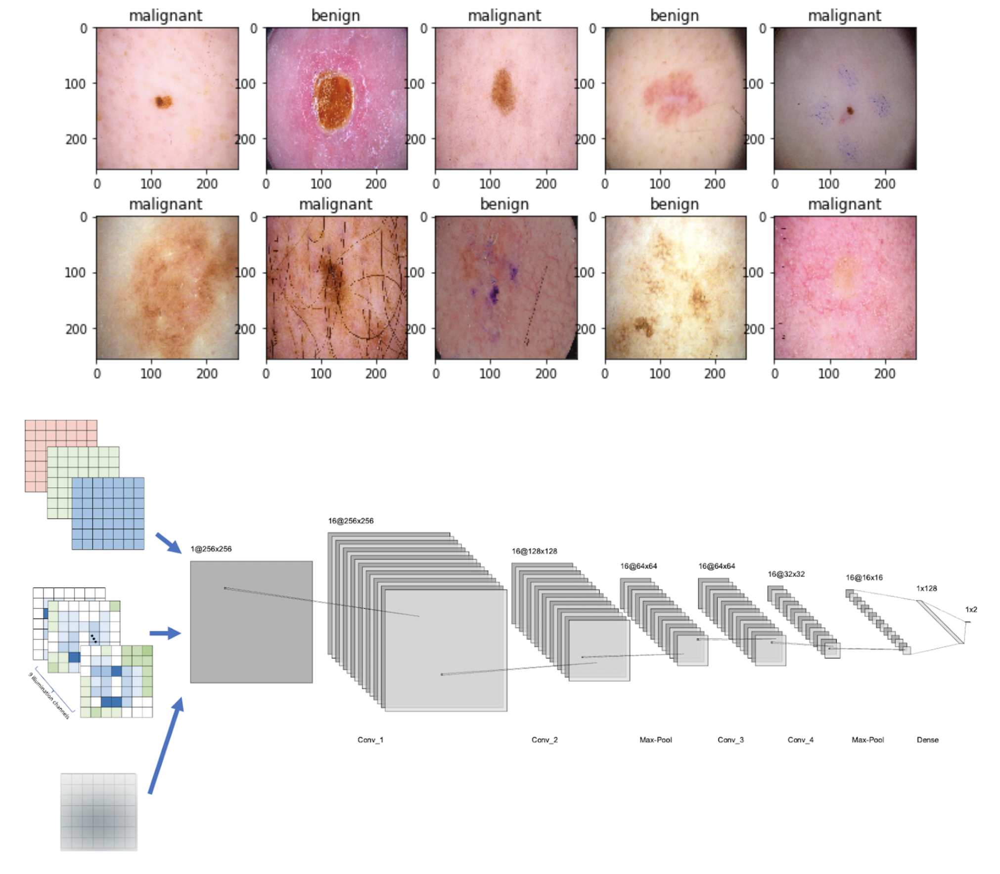

| Paper PDF |

|
Skin cancer is the most prevalent type of cancer, and can be deadly if left untreated. In recent years, deep learning approaches have been implemented to automate skin cancer detection and classification using dermoscopic images, however, the process still requires human intervention to capture accurate and high quality dermoscopic images. This study aims to automate the physical components of the dermoscope to see if optimizing for these components will increase model performance results. After optimizing for the color channels, illumination patterns, and lens blur with a convolutional neural network (CNN), the results suggest training the lens blur with the CNN improves classification performance, from 0.70 AUC and 70% accuracy to 0.73 AUC and 74% accuracy. This study can be extended to a larger aim of creating inexpensive, portable and fully automated imaging systems to detect skin cancer. |
|
|
| Paper: |
Code and Data:
|